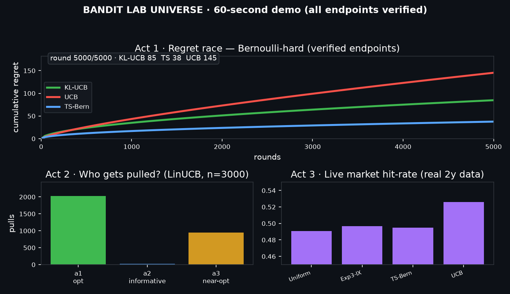
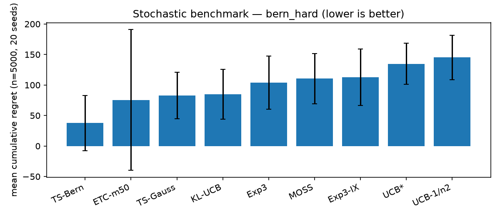
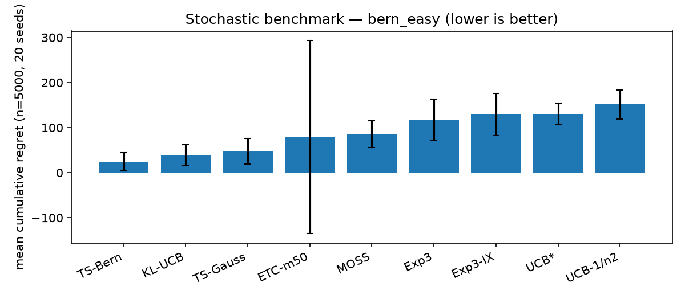
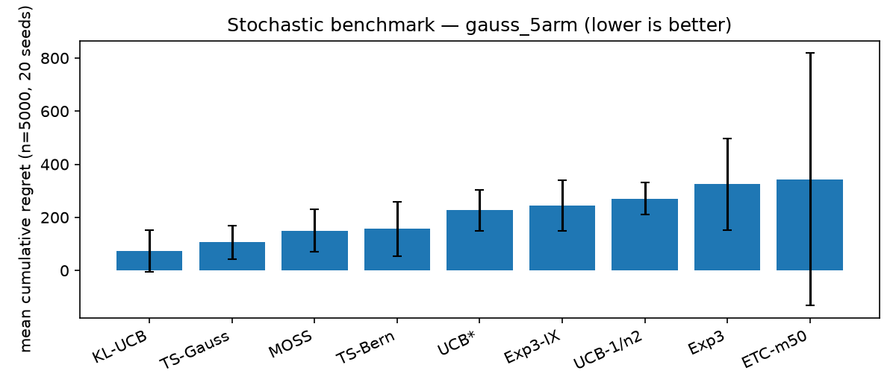
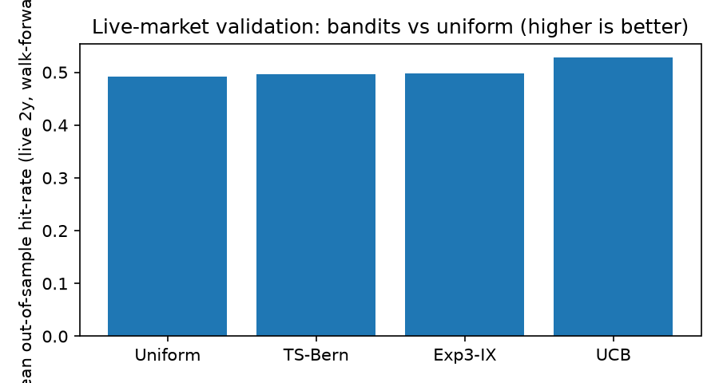
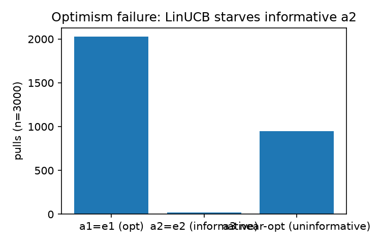

From bandit theory to live-market proof. Ten classic decision-making algorithms rebuilt from first principles, benchmarked on seeded simulations and on real market data — with honest statistics and four findings the textbooks underplay.
Autoplaying GIF for quick scanning · MP4 with controls for frame-by-frame study ·
poster below. All endpoints are the verified numbers from results/.
Act 1 regret race · Act 2 pull allocation · Act 3 live hit-rates. Full-res GIF: docs/demo.gif

Poster frame — click to enlarge. Screenshot this page any time:
python -m http.server + your browser, or Playwright page.screenshot(full_page=True).
Textbooks prove orderings — minimax Θ(√nk), asymptotic
ΣΔ/d(μ,μ*) — but practitioners need constants at n≈10³–10⁴,
which structure survives non-stationarity, and whether synthetic orderings
persist on real data. This repo closes the loop theory → code → seeded benchmark →
live walk-forward in one pinned, re-runnable place. It is a study guide that runs,
a benchmark you can extend, and a template for honest market validation
(costs, deflated Sharpe, regime notes, negative results included).
m), UCB, UCB* (f(t)=1+t log²t), MOSS, KL-UCB (Bernoulli-KL bisection), Exp3 (loss-IX form), Exp3-IX, LinUCB/OFUL (ridge + √β‖a‖_{V⁻¹}), Phased-Elimination, Thompson Sampling (Beta–Bernoulli + Gaussian). Each docstring cites its equation.ΣΔ·T), easy/hard splits that separate variance-aware winners.python:3.12-slim, frozen deps, docker compose up runs tests + all experiments. make test bench live for native runs.exp01, then I see Σ16log n/Δ behaviour and the √nk log n worst case on the same plot.algos/, when I add one line to exp01.policies(), then it appears in every table/figure with identical seeds.exp04_live_market.py --symbols ..., then I get out-of-sample hit-rate, regret, Sharpe and the multiple-testing haircut.select/update policies + Docker so that I can embed one in production.bandit_lab, then KLUCB().select/update runs with no hidden state.docs/demo.gif, when I play it, then students see regret separation, starvation, and live proof without setup.results/*.json + paper/PAPER.md, when a reviewer runs docker compose up, then every table regenerates.git clone <this-repo> && cd bandit-lab-universe-2026 pip install -r requirements.txt PYTHONPATH=src pytest -q tests/ # 8 verification tests PYTHONPATH=src python experiments/exp01_stochastic.py # synthetic benchmark PYTHONPATH=src python experiments/exp04_live_market.py --symbols AAPL,MSFT,NVDA --folds 3 # live proof
Docker (full reproduction): docker compose up — runs tests + exp01/02/03/04-synthetic/05.
Make: make test · make bench · make bench-offline · make live
python --version # 3.10+ pip install -r requirements.txt # numpy scipy pandas matplotlib yfinance requests scikit-learn tqdm pytest pip install -e . # optional: import bandit_lab anywhere (needs --break-system-packages on some distros; PYTHONPATH=src always works)
| Knob | Where | Default | Notes |
|---|---|---|---|
N / SEEDS | exp01/02/03 | 5000 / 20 | Horizon + reps; UCB delta=1/n² follows automatically |
--symbols --folds --cost_bps | exp04 | 5 equities · 4 · 5bps | Yahoo for stocks, CoinGecko for BTC/ETH; --synthetic for offline |
m / delta / sigma | ETC / UCB / Gaussian | 50 / 1e-4 / 1.0 | ETC.oracle_m(n,k,Δ) implements Eq.(6.5) |
eta / gamma | Exp3 / IX | √(2log k/nk) / η/2 | Thm 11.2 / 12.1 tunings |
lam / m2 / L / delta | LinUCB | 1.0 / 1.0 / 1.0 / 1e-3 | β from Eq.(19.8), log-det upgrade in code |
| Chapter | Algorithm | File | Guarantee checked |
|---|---|---|---|
| Ch.6 ETC | Explore-then-commit + oracle m (6.5) | algos/etc.py | Thm 6.1 tradeoff; oracle_m() tested |
| Ch.7 UCB | μ̂+√(2log(1/δ)/T) | algos/ucb.py | Thm 7.1/7.2 O(√nk log n) |
| Ch.8 UCB* | f(t)=1+t log²t | algos/ucb.py | Thm 8.1 limsup R/log n ≤ Σ2/Δ |
| Ch.9 MOSS | √(4/T·log⁺(n/kT)) | algos/moss.py | Thm 9.1 ≤39√kn+ΣΔ |
| Ch.10 KL-UCB | Bernoulli-KL bisection | algos/kl_ucb.py | Thm 10.6 ΣΔ/d(μ,μ*); Pinsker tested |
| Ch.11 Exp3 | loss estimator (11.6) | algos/exp3.py | Thm 11.2 √(2nk log k) |
| Ch.12 Exp3-IX | γ=η/2 | algos/exp3ix.py | Thm 12.1 high-probability |
| Ch.19/20 LinUCB | ridge + √β‖a‖_{V⁻¹} | algos/linucb.py | Thm 19.2 + 20.5 (elliptical potential) |
| Ch.22 PhasedElim | G-optimal approx + elim | algos/elimination.py | Thm 22.1 O(√(nd log(k log n/δ))) |
| Ch.36 TS | Beta–Bernoulli + Gaussian | algos/thompson.py | Thm 36.1/36.3 |
| Ch.15/24/25 | lower-bound harnesses | exp03, exp05/Q2 | Thm 15.2, 24.1, Cor 25.2 |
| Ch.31 | switching env | envs/adversarial.py | tracking vs static regret |
results/exp01_stochastic.json)| Policy | Mean regret ↓ | Std | VaR95 | Theory |
|---|---|---|---|---|
| TS-Bern | 37.6 | 45.5 | 119.1 | Bayes O(sqrt(nk log n)); frequentist asymptotically optimal (Bern) |
| ETC-m50 | 75.7 | 115.1 | 300.1 | Thm6.1 O(sqrt n) only if m tuned; else n^{2/3} |
| TS-Gauss | 82.9 | 38.0 | 144.0 | Thm36.3 asymptotically optimal Gaussian |
| KL-UCB | 84.8 | 40.8 | 152.5 | Thm10.6 limsup R/log n <= sum Delta/d(mu,mu*) (Bernoulli-optimal) |
| Exp3 | 103.8 | 43.8 | 188.1 | Thm11.2 O(sqrt(nk log k)) adversarial->stochastic reduction |
| MOSS | 110.4 | 41.3 | 162.8 | Thm9.1 O(sqrt(nk)) minimax optimal |
| Exp3-IX | 112.7 | 46.3 | 194.7 | Thm12.1 high-prob O(sqrt(nk log(k/delta))) |
| UCB* | 134.8 | 33.6 | 184.1 | Thm8.1 limsup R/log n <= sum 2/Delta (asymptotically optimal) |
| UCB-1/n2 | 145.3 | 36.5 | 196.5 | Thm7.1 sum 16log n/Delta; worst O(sqrt(nk log n)) |
| Policy | Mean regret ↓ | Std | VaR95 | Theory |
|---|---|---|---|---|
| TS-Bern | 23.7 | 20.4 | 60.2 | Bayes O(sqrt(nk log n)); frequentist asymptotically optimal (Bern) |
| KL-UCB | 38.5 | 23.5 | 72.7 | Thm10.6 limsup R/log n <= sum Delta/d(mu,mu*) (Bernoulli-optimal) |
| TS-Gauss | 48.0 | 28.4 | 87.2 | Thm36.3 asymptotically optimal Gaussian |
| ETC-m50 | 79.1 | 213.8 | 131.0 | Thm6.1 O(sqrt n) only if m tuned; else n^{2/3} |
| MOSS | 85.5 | 29.3 | 139.7 | Thm9.1 O(sqrt(nk)) minimax optimal |
| Exp3 | 117.5 | 45.8 | 195.2 | Thm11.2 O(sqrt(nk log k)) adversarial->stochastic reduction |
| Exp3-IX | 129.2 | 46.6 | 207.2 | Thm12.1 high-prob O(sqrt(nk log(k/delta))) |
| UCB* | 130.2 | 24.5 | 175.5 | Thm8.1 limsup R/log n <= sum 2/Delta (asymptotically optimal) |
| UCB-1/n2 | 151.4 | 32.3 | 221.1 | Thm7.1 sum 16log n/Delta; worst O(sqrt(nk log n)) |
| Policy | Mean regret ↓ | Std | VaR95 | Theory |
|---|---|---|---|---|
| KL-UCB | 72.8 | 78.3 | 201.7 | Thm10.6 limsup R/log n <= sum Delta/d(mu,mu*) (Bernoulli-optimal) |
| TS-Gauss | 105.7 | 63.5 | 192.0 | Thm36.3 asymptotically optimal Gaussian |
| MOSS | 149.9 | 79.6 | 237.3 | Thm9.1 O(sqrt(nk)) minimax optimal |
| TS-Bern | 157.1 | 102.7 | 317.7 | Bayes O(sqrt(nk log n)); frequentist asymptotically optimal (Bern) |
| UCB* | 227.3 | 77.0 | 333.5 | Thm8.1 limsup R/log n <= sum 2/Delta (asymptotically optimal) |
| Exp3-IX | 245.1 | 94.6 | 376.3 | Thm12.1 high-prob O(sqrt(nk log(k/delta))) |
| UCB-1/n2 | 270.5 | 60.1 | 400.0 | Thm7.1 sum 16log n/Delta; worst O(sqrt(nk log n)) |
| Exp3 | 325.7 | 172.5 | 695.1 | Thm11.2 O(sqrt(nk log k)) adversarial->stochastic reduction |
| ETC-m50 | 343.9 | 474.2 | 1069.4 | Thm6.1 O(sqrt n) only if m tuned; else n^{2/3} |



results/exp04_live_market.csv)| Policy | Hit-rate ↑ | Regret ↓ | Sharpe | Deflated |
|---|---|---|---|---|
| UCB | 0.528 | 2.0 | +1.40 | +0.72 |
| Exp3-IX | 0.498 | 5.8 | -0.27 | -0.63 |
| TS-Bern | 0.496 | 6.0 | +0.36 | -0.31 |
| Uniform | 0.492 | 6.5 | -0.60 | -1.33 |
Reading: hit gaps look small (0.528 vs 0.492) but regret differs 3× (best-asset concentration). Deflated Sharpe halves the nominal (multiple-testing haircut) — the honest 2026 standard.


Δ²/2p(1−p) adapts. Follow-up: σ-free variance-adaptive UCB.1{r_{t+1} > 5bps} (Bernoulli-ized, Ch.10 setting).≤t; hindsight best-asset only for scoring.data/market_closes.csv, results/exp04_*.csv/json, exp04_meta.json (source + date + lookahead statement).src/bandit_lab/algos/{etc,ucb,moss,kl_ucb,exp3,exp3ix,linucb,thompson,elimination}.py
src/bandit_lab/envs/{stochastic,adversarial,linear,market}.py + metrics.py
experiments/{exp01_stochastic,exp02_adversarial,exp03_linear,exp04_live_market,exp05_hidden_patterns,make_figures,make_demo,make_preview}.py
tests/test_bandits.py results/{*.json,*.csv,figures/} data/ paper/PAPER.md docs/{demo.gif,demo.mp4,demo_poster.png}
Dockerfile docker-compose.yml Makefile pyproject.toml requirements.txt
from bandit_lab.algos.kl_ucb import KLUCB
from bandit_lab.envs.stochastic import BernoulliBandit
import numpy as np
rng = np.random.default_rng(0)
env, pol = BernoulliBandit([0.7, 0.5]), KLUCB()
pol.reset(env.k)
for _ in range(1000):
a = pol.select(rng); pol.update(a, env.pull(a, rng)) # select/update everywhere
from bandit_lab.algos.linucb import LinUCB
lin = LinUCB(d=5); lin.reset()
a = lin.select_arm(arms_matrix, rng); lin.update_ctx(arms_matrix[a], x)
Short version: this page. Full PhD-style draft: paper/PAPER.md (abstract, method-vote table,
compressed theory, full tables, threats, next steps, references). Cite the book + this repo (see README).
Add a policy in algos/ with select/update, one line in exp01.policies(),
one test in tests/. Keep seeds fixed, update figures via make_figures.py,
regenerate this page via make_preview.py. PRs welcome.
MIT — see LICENSE. Market data © Yahoo Finance / CoinGecko (your download in data/; re-run exp04 to refresh).